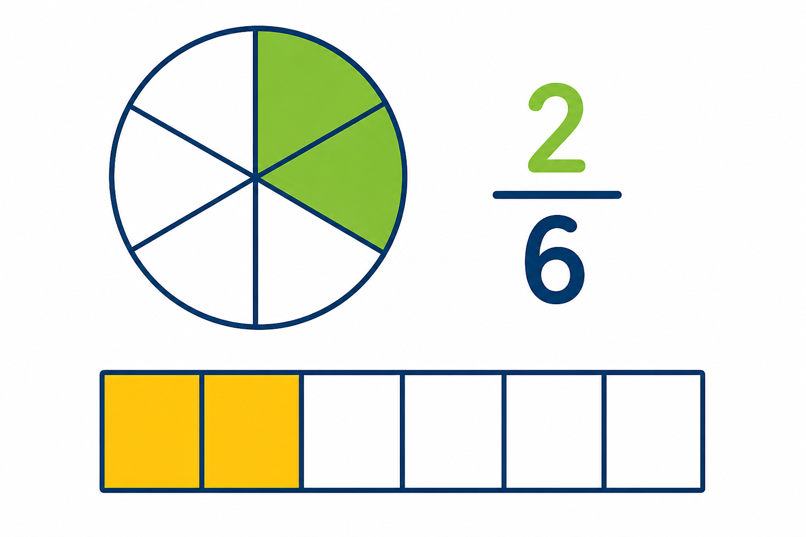

Co to jest? Що це?
Ułamek liczby to część tej liczby: dzielisz na równe części (mianownik) i bierzesz kilka (licznik).
Дріб числа — частина цього числа: ділиш на рівні частини (знаменник) і береш кілька (чисельник).
Jak w szkole? Як у школі?
p/q z a = (a : q) · p albo (a · p) : q.
p/q від a = (a : q) · p або (a · p) : q.
Przykład z życia Приклад з життя
Część kieszonkowego / całość z części. Przykład: 3/4 z 20 = 15.
Частина кишенькових / ціле з частини. Приклад: 3/4 z 20 = 15.
3/4 z 20 = 15